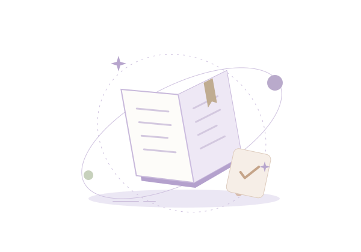

Skip to workspace
YOUR DAY, A LITTLE MORE IN BALANCE
Make space for what matters.
A clear head. A few good intentions. Let’s begin.
UTC
ONE PLACE, MORE POSSIBILITYLess juggling.
More living.
Your learning, money, and plans —
gently brought together.

A NOTE FOR TODAYYou don’t have to do it all.
Just the next right thing.
One step at a time.
Learning paths3 in motion
Focused today87 / 120 min
Assignments done1 / 3 this session
Sample receivables$920.00
A LITTLE WISER, EVERY DAY
Keep your curiosity going
KEEP THE LITTLE THINGS IN ORDER
A clearer money picture
DEMO CHECKING$2,640.00Session entries update this balance
DEMO SAVINGS$4,200.00Read-only opening balance
Sample USD only. No payments, bank connections, or automatic recurring charges.
On the horizon
MAKE ROOM FOR JOYSketch, just because.A gentle reminder, not another task.
Sample hobby inspiration.
GOOD THINGS TAKE SHAPE
A few things in motion